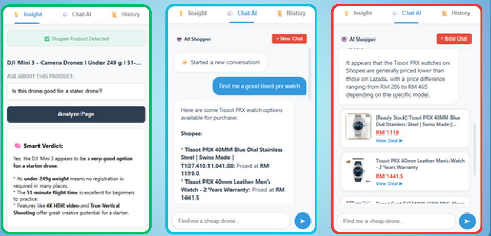
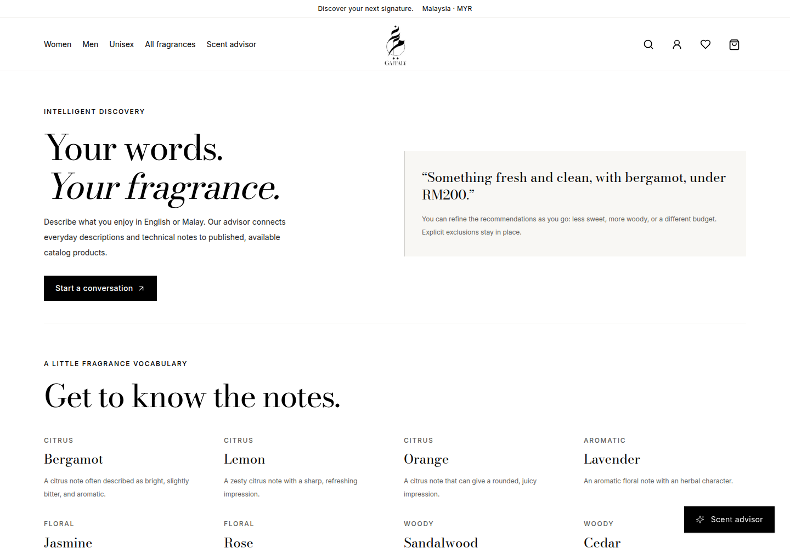
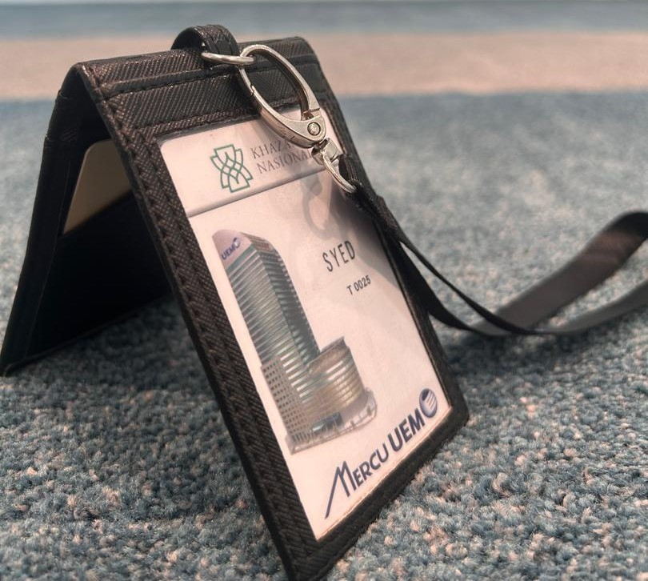
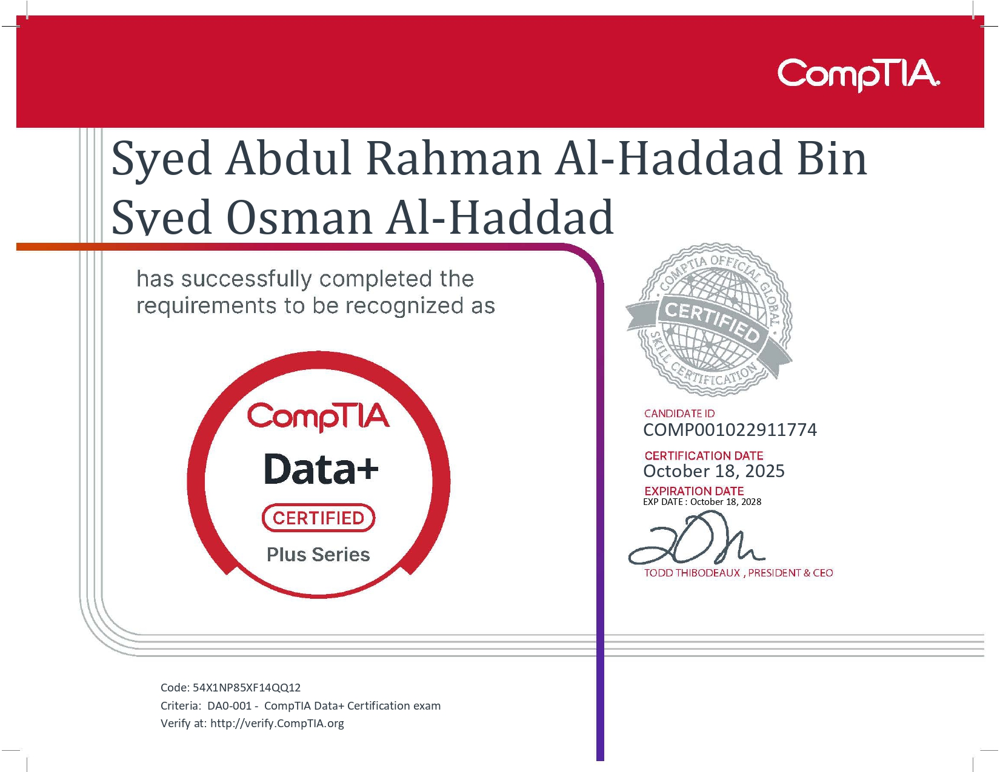
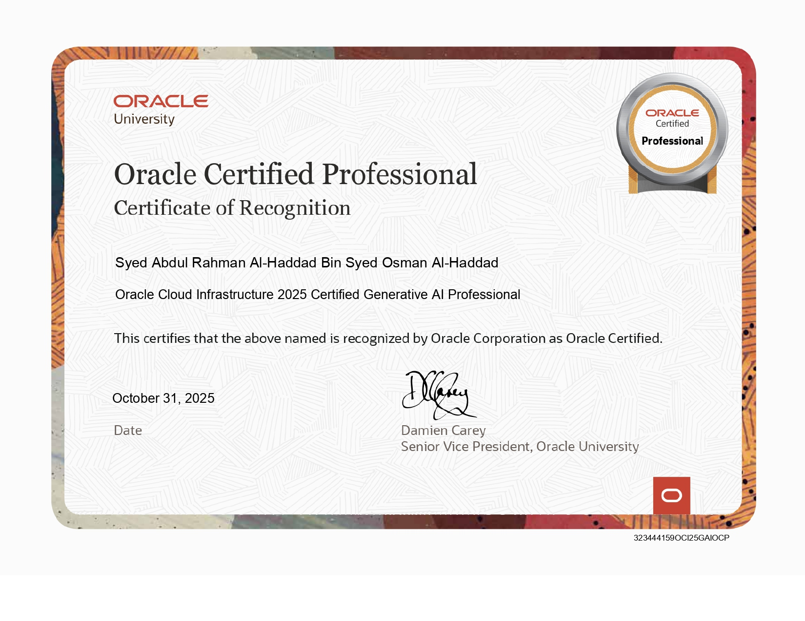

Syed AbdulRahman.
AI & data engineer.
From raw data to useful products.
Former intern at Khazanah Nasional Berhad.
Computer Science graduate, IIUM.
Dean’s List, 5 semesters.
Pull down and release. Tap to flip.Syed Abdul Rahman Al-Haddad
The tools behind the work.
 Python
Python TypeScript
TypeScript React
React Next.js
Next.js PyTorch
PyTorch TensorFlow
TensorFlow FastAPI
FastAPI PostgreSQL
PostgreSQL- MongoDB
 Docker
Docker Git
Git GitHub
GitHub
A few things I’ve built.
Enterprise pipelines, applied AI, and products built end to end.
6 projects
SmartShopper
AI-powered personal shopper
2nd Place, Best Commercialization
Show detailsHide details
SmartShopper
AI-powered personal shopper
2nd Place, Best Commercialization

Co-developed a Chrome extension that brings live Shopee and Lazada product comparisons, shopping chat, and personalized recommendations into one interface.
- Built the FastAPI and MongoDB RAG backend with GTR-T5 embeddings and ChromaDB, achieving 88% semantic retrieval accuracy in the project evaluation.
- Aggregated live Shopee and Lazada data with undetected_chromedriver and BeautifulSoup, combining page analysis, shopping chat, and saved sessions.
- Integrated Gemini 2.5 Flash Lite for intent parsing, context-aware memory, and Smart Judge filtering of irrelevant listings.
- The final-year project evaluation reported total response times under 3 seconds and backend processing latency of 2.4 seconds.
Python, FastAPI, MongoDB, Chroma, GTR-T5, Gemini 2.5 Flash Lite, Chrome Extension
View backend source (opens in a new tab)
Fragrance platform
E-commerce & scent recommendations
Show detailsHide details
Fragrance platform
E-commerce & scent recommendations

17 integration tests & 24 browser cases
A perfume storefront and admin dashboard that connect personalized discovery with product, inventory, and order management.
- Built an English/Malay scent advisor with deterministic fallback and weighted ranking constrained by budget, stock, and excluded notes.
- Implemented authentication, PostgreSQL/Prisma models, inventory management, and transactional sandbox checkout.
- Added Neon and S3-compatible image storage with WebP processing. Verified workflows across multiple local test runs.
Next.js, React, TypeScript, Tailwind CSS, PostgreSQL, Prisma, Neon, Playwright
Visit Gaffaly.my (opens in a new tab)
Investment lakehouse
Financial data engineering
Show detailsHide details
Investment lakehouse
Financial data engineering

Automated investment research workflows
Python ingestion and PySpark processing that turn raw financial filings into structured datasets for downstream machine learning.
- Handled API back-off, retries, state checkpointing, and exceptions for corrupted symbols and delisted firms.
- Architected Bronze, Silver, and Gold layers in Microsoft Fabric to clean filings and structure analytical data.
- Supported investment research through automated report parsing and production lakehouse pipelines.
Python, PySpark, Microsoft Fabric, Medallion architecture
Financial NLP
Sentiment, risk clustering & LLM evaluation
Show detailsHide details
Financial NLP
Sentiment, risk clustering & LLM evaluation
Making unstructured reports useful to investment research.
- Developed a corporate sentiment scoring pipeline using FinBERT and spaCy to turn reports into quantitative metrics.
- Applied HDBSCAN to text-embedding-3-large document embeddings to identify emerging financial risk clusters.
- Benchmarked LLMs for automated topic labeling to support analysts’ document review.
Python, FinBERT, spaCy, HDBSCAN, text-embedding-3-large, LLM benchmarking
Lung cancer classification
Hybrid machine learning ensemble
Show detailsHide details
Lung cancer classification
Hybrid machine learning ensemble
94% classification accuracy in the project evaluation.
Built a hybrid Random Forest and XGBoost ensemble, with Genetic Algorithm and Particle Swarm Optimization for hyperparameter tuning. It achieved the highest classification accuracy among the models evaluated in this academic project.
Python, Scikit-learn, Random Forest, XGBoost, Genetic Algorithm, PSO
Supply chain analytics
Predictive & diagnostic analysis
Show detailsHide details
Supply chain analytics
Predictive & diagnostic analysis
Understanding the factors behind profit and delivery risk.
Analyzed retail and logistics datasets with Pandas, NumPy, Seaborn, and Matplotlib. Developed Random Forest, Gradient Boosting, LightGBM, XGBoost, and SVM models to forecast order profit and identify operational inefficiencies.
Python, Pandas, NumPy, LightGBM, XGBoost, Scikit-learn, Seaborn, Matplotlib
Built at Khazanah.
Engineering for investment research.
Khazanah Nasional Berhad
AI & Data Engineering Intern
March – September 2026

Built data and NLP pipelines for investment research and document review.
- Resilient Python API ingestion with retries, checkpointing, and exception handling.
- Bronze, Silver, and Gold lakehouse architecture in Microsoft Fabric with PySpark.
- Corporate sentiment scoring with FinBERT and spaCy.
- Embedding-based financial risk clustering and LLM topic-labeling benchmarks.
Beyond the build.

I’m Syed Abdul Rahman Al-Haddad, a Computer Science graduate from IIUM, focused on data science and computational intelligence.
I enjoy the work between a model and a useful product: preparing the data, building the backend, and making the whole system work together.
My experience spans investment research at Khazanah Nasional, an award-winning shopping assistant, and a full-stack fragrance recommendation platform.
Download my résumé PDF, 568 KBEducation
Bachelor of Computer Science
International Islamic University Malaysia
Data Science & Computational Intelligence
October 2022 – September 2026
CGPA 3.56 / 4.00. Dean’s List, 5 semesters.
Foundation
Engineering & Computer Science
Centre for Foundation Studies, IIUM
July 2021 – June 2022
CGPA 3.37 / 4.00
My working toolkit.
Across data, models, and the application around them.
- Languages
- PythonSQLTypeScript
 JavaScriptRJava
JavaScriptRJava C++
C++ - AI & machine learning
 Scikit-learnTensorFlowPyTorchRAGLLMs
Scikit-learnTensorFlowPyTorchRAGLLMs GeminiOpenAI
GeminiOpenAI AnthropicGTR-T5FinBERTspaCyHDBSCANNLTK
AnthropicGTR-T5FinBERTspaCyHDBSCANNLTK OpenCVAzure AI Foundry
OpenCVAzure AI Foundry- Data & analytics
- PySparkMicrosoft Fabric
 Pandas
Pandas NumPy
NumPy Snowflake
Snowflake BigQueryPower BITableauMatplotlibSeaborn
BigQueryPower BITableauMatplotlibSeaborn - Web & backend
 SeleniumBeautifulSoup4Next.jsReact
SeleniumBeautifulSoup4Next.jsReact Node.jsFastAPI
Node.jsFastAPI Tailwind CSS
Tailwind CSS Prisma
Prisma HTML
HTML CSS
CSS- Databases & cloud
- PostgreSQLMongoDB
 MySQLChromaDBFAISSS3 StorageNeonOracle Cloud Infrastructure
MySQLChromaDBFAISSS3 StorageNeonOracle Cloud Infrastructure Vercel
Vercel - Testing & development
- DockerPlaywrightVitestGitGitHub
 Linux/WSL
Linux/WSL C
C JupyterVS Code
JupyterVS Code - Productivity
- Microsoft Office Suite
Certifications

Open full certificate in a new tab
Open full certificate in a new tabGenerative AI Professional2025
Recognition
From programming competitions to commercialization.
| Year | Competition or award | Result |
|---|---|---|
| 2026 | FYP ExhibitionAI-powered personal shopper | 2nd PlaceBest Commercialization |
| 2024 | Nationwide Top CodersCompetitive programming | Top 5 |
| 2024 | Top Coders IIUMUniversity competition | 2nd Place |
Beyond the code
I-Hax Innovation Hackathon
Deputy Director, 2024
Co-directed a nationwide event for 100+ participants, coordinating operations and securing RM 15,000+ in sponsorships.
ICT Student Society
Head Officer, Entrepreneurship, 2022–2023
Managed campus events, generated RM 9,000+ in profit, and coordinated hardware showcases at IIUM.
Let’s build
what’s next.
I’m looking for junior roles in AI engineering, data engineering, and data science.